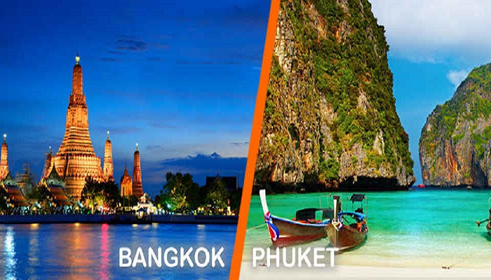
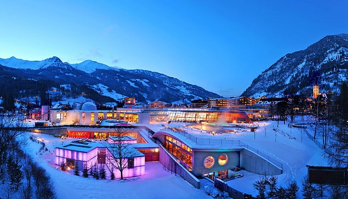

International Packages

Bangkok-Phuket
Duration:-6-7days
Bangkok, the country's capital city is certainly where
Thailand's cultural heart beats making it a must-see
when visiting the region. On the other hand, Phuket
the largest of Thailand's islands offers a
rain-forested, mountainous landscape and is home
to countless sandy beaches.

Maldives
Duration:-5-6days
The Maldives is famous for a number of reasons,
including its vibrant culture, pristine beaches,
sprawling greenery, and fascinating landmarks.
Apart from the numerous enchanting landmarks,
Maldives is also famous for water sports and other
adventure activities.

Malaysia
Duration:-5-6days
Malaysia is famous for one of the most iconic
Asian landmarks, the Petronas Towers. At 452 meters,
the Petronas Twin Towers were the tallest buildings
in the world until Taipei 101 was built in 2004.
The Petronas Twin Towers remain the tallest twin towers
in the world.

Switzerland
Duration:-6-7days
Switzerland is famous for its mesmerizing alpine scenery,
luxury branded watches, and deliciously milky chocolate.
A melting pot of many different cultures, Switzerland
is also known for its alluring cities and scenic train
rides that showcase the best of the country's
natural vistas.